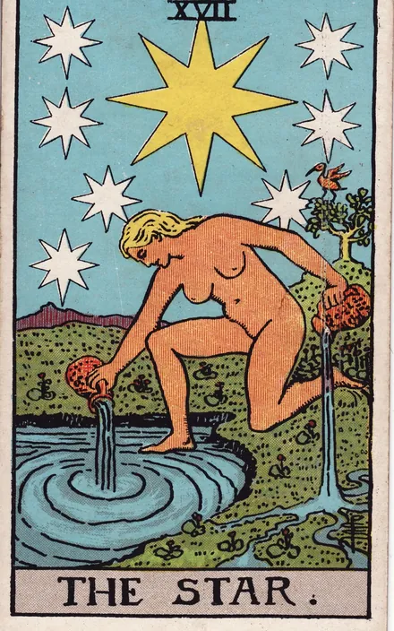

La portada ya tiene forma. Ahora probamos el pulso: materia que responde al dedo, una luz que se deja ver de vez en cuando y una revelación que merece detenerse.
Tres momentos
El pulso tiene ritmo.
Los efectos viven en la historia de uso. Toca la portada, abre Mesa y revela una carta.
01Reposo
Bruma lenta bajo el instrumento. Un brillo raro cruza el filo de Mesa.
02Intención
La placa se alza unos píxeles y la carta acompaña el dedo.
03Revelación
Una expansión breve confirma la carta; el significado queda legible.
Arte y paleta del repo. El cielo es una instantánea real y fechada; las cartas y sus textos son una demostración visual.
9:41●●● ▰
ARCANUM
Cielo · tu carta natal y lo que hoy la toca
CIELO · INSTANTÁNEA DEL 7 OCT 2026
Luna menguante
10 % iluminada. Próxima Luna Nueva: 10 oct, 10:50 COT.
Motor astral ARCANUM
Datos consultados el 7 oct 2026, 10:51 COT, en /astral/moon y /astral/calendar/moon-phases. Esta maqueta muestra una instantánea fechada; la app consulta el estado actual.
☾
Elige tu práctica
Una acción a la vez
Mesa de tarotUna lectura de muestra · sin cuenta
Pregunta
Carta
Revela
Cierra
☾

Tirada visual de muestra
01 · INTENCIÓN
Trae una pregunta.
Puedes escribirla o seguir en silencio. La maqueta no la envía ni la conserva al cerrar.
02 · ELECCIÓN
Escoge una carta.
Tres cartas de muestra. Elige la que te llame.
03 · REVELACIÓN
El momento es tuyo.
Sostén tu pregunta. La carta está lista.
04 · LECTURA
La Estrella.
Luz sobre el agua.
Una imagen para contemplar, no una interpretación generada.
Guardada solo en esta demostración. Nada se guardó en tu cuenta.
Diseño
Continuidad al tocar
La placa Mesa conserva su lugar mientras crece hacia la lectura; el destello se reserva para la carta. Google Design · Apple HIG.
Dato real
Cielo con fecha
La instantánea lunar procede del motor astral de ARCANUM, consultado el 7 de octubre de 2026 a las 10:51 COT. Se fecha para no parecer un dato en vivo. Fase · Próximas fases.
Accesibilidad
Magia opcional
«Pausar movimiento» apaga lo ornamental. El sistema puede pedir movimiento y transparencia reducidos. La carta y el estado se expresan también con texto. W3C · Blur Flutter.
Maqueta conceptual: estructura E, paleta y assets locales reales. La pregunta y la lectura de muestra no salen del navegador; el guardado es temporal en memoria. No hay integración con router, tarot, grimorio ni sesión. Duraciones, contraste y coste en Flutter pendientes de medición.